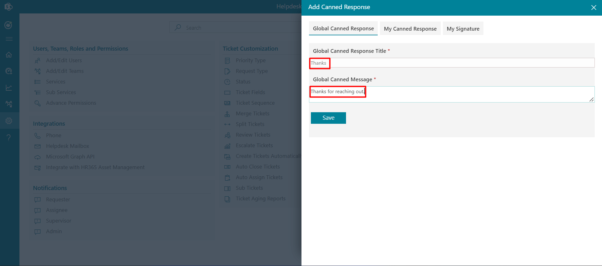
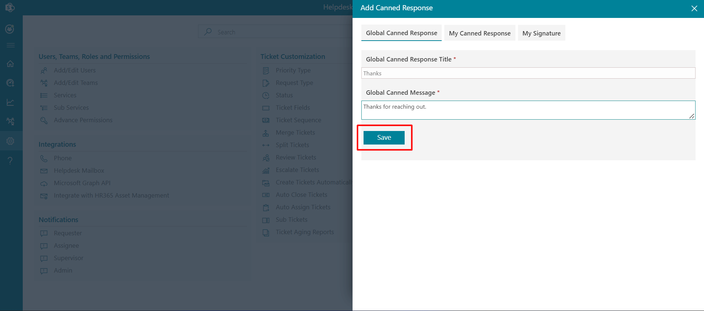
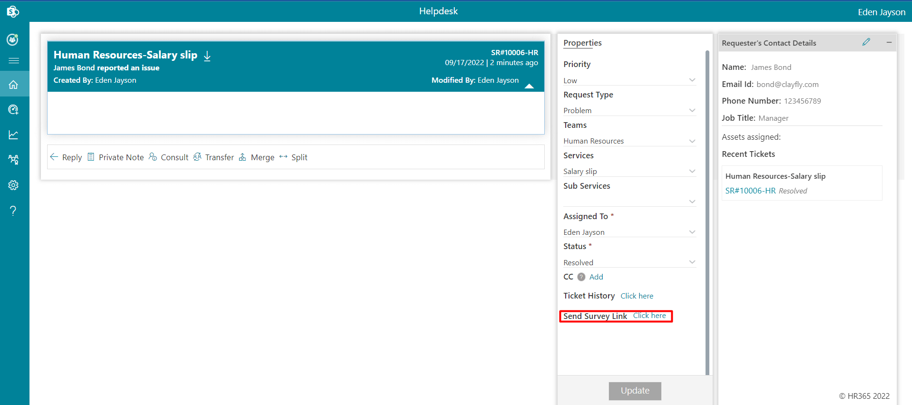

Features
From this section you can customize the features of helpdesk application.
- Navigate to the Settings menu and click on Canned Responses under Features.
-
Click on +New to open the New Canned Response form.
 -
Enter the Canned Response Title and the Canned Message.
-
Click the Save button to save the new canned response.

Canned Responses
Canned response settings are accessible to admins, supervisors, and agents from the settings page. These pre-defined responses can be used when commenting on a ticket. To use a canned response, click the reply option, select a response from the canned response panel, and click the "Add" button to insert it into the comment.
There are three types of canned responses available:
Global Canned Response: These are public responses that can be created and used by all team members.
My Canned Response: These are user-specific responses, meaning only the creator can view and use them when commenting on a ticket.
My Signature: Team members can set their own default signature, which will automatically appear when adding comments on a ticket. These signatures are individual-specific.
To create Canned Responses, follow the steps below:
This applies to global canned responses, my canned responses, and my signature.
Delete: Click the delete icon, this displays a dialog box. Click Yes button.
Edit: You can edit Title and Message Body. Click the edit icon, this displays Edit Canned Response. Update the Title and/or Message Body and click on Update button.
Customer Satisfaction
A survey link notification is sent to the ticket requester once their ticket has been resolved or closed. From here survey link notification can be set either for resolved or closed tickets or sent manually.
A survey link notification is automatically sent to the ticket requester once their ticket is resolved or closed. From this section, you can configure when the survey link notification should be sent, either upon ticket resolution, closure, or manually.
If Allow agent to send a survey link is selected, a Click here link will appear when the ticket status is set to "Resolved" in the properties panel on the comment page. The ticket assignee can then click the link to send the survey notification to the requester.
Delete: Click the delete icon, this displays a dialog box. Click Yes button.
Edit: You can edit Survey Name, Point scale, Thank you page and survey link in emails.